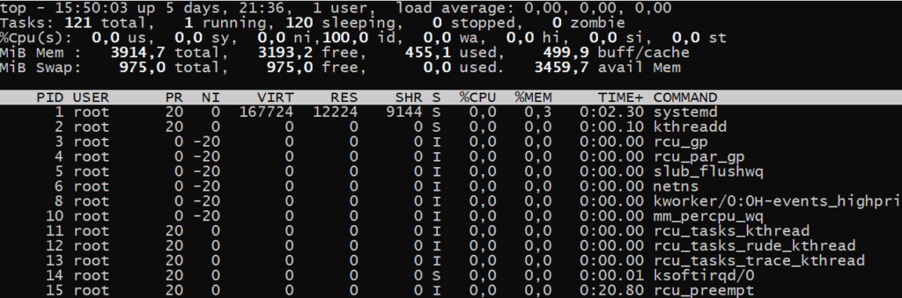
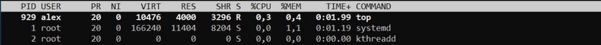
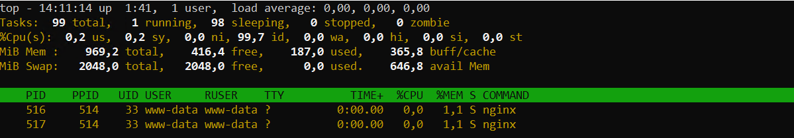
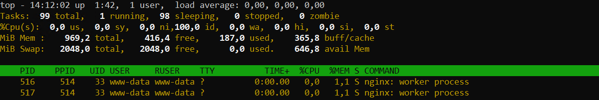
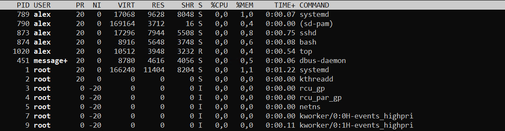
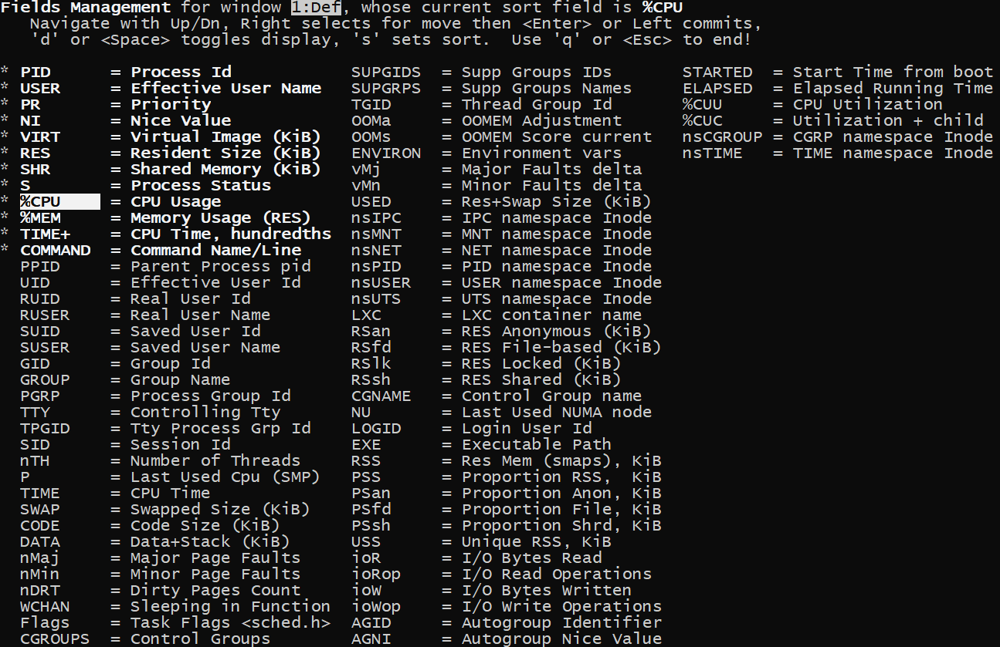

Утилита top
Top - это консольный диспетчер задач. Она показывает общую информацию о системе и информацию о каждом процессе. Это интерактивная утилита, то есть она постоянно обновляет данные и с ней можно взаимодействовать с помощью горячих клавиш
Пример работы утилиты: 
Показанную информацию можно разбить на две части:
- Сверху — общая информация о системе.
- Снизу — информация по каждому процессу.
Общая информация о системе
На первой строке показаны: текущее время, uptime, количество активных пользователей, load average.
Вторая показывает: общее количество процессов, количество активных процессов, количество спящих процессов, количество остановленных процессов, количество зомби процессов.
На третьей строке показана информация о потреблении ЦПУ:
us— потребление cpu пользовательскими процессами;sy— потребление cpu системными процессами;ni— потребление cpu пользовательскими процессами, c измененным приоритетом (командой nice или renice);id— простаивание cpu;wa— процент времени, в течение которого процессор простаивал, ожидая завершения операции ввода-вывода;hi— процент времени работы аппаратных прерываний (периферийные устройства могут вызывать такие прерывания);si– процент времени работы программных прерываний (некоторые приложения могут вызывать такие прерывания);st— процент времени, когда процессор не был доступен виртуальной машине (будет расти если виртуальной машине выделить больше ядер, чем имеет гипервизор).
Ниже видим информацию по потреблению оперативной памяти (Mem) и подкачки (Swap):
total— общее количество памяти;free— количество свободной памяти;used— количество используемой памяти;buff / cache— память выделенная под буфер и дисковый кэш;avail Mem— память которая может быть выделена для запуска новых процессов.
Информация по каждому процессу
Внизу показана информация по каждому процессу. Информация разбита на колонки:

PID— номер процесса.USER— имя пользователя под которым работает процесс.PR— приоритет процесса.NI— любезность процесса (чем она выше, тем ниже приоритет).VIR— количество памяти, которое способен адресовать процесс. Включает выделенную память, которая, возможно, ещё не полностью используется.RES— количество физической памяти (использованной а не выделенной), которую использует процесс.SHR— количество разделяемой памяти, которую использует процесс. Разделяемая память может использоваться вместе разными процессами.S— состояние процесса (я их уже описывал здесь):S(sleeping) — спящий;R(running) — в работе;Z(zombie) — зомби;D(uninterruptible sleep) — ожидает дискового ввода/вывода, и не принимает никакие сигналы;T(stopped by job control signal) — остановлен специальным сигналом;t(stopped by debugger during trace) — остановлен в процессе дебага;I(Idle) — бездействующий поток ядра.%CPU— использование CPU в процентах;%MEM— использование RES в процентах;TIME+— сколько времени этот процесс работал на ЦПУ, с точностью до сотых долей секунды;COMMAND— с помощью какой команды запустили процесс.
Опции команды top
Опция -n укажет через сколько повторений нужно завершить работу top. По умолчанию чтобы выйти из top нужно нажать клавишу q. Следующая команда выйдет из top через 10 повторений:
top -n 10
Опция -u заставит top отображать процессы определенного пользователя:
top -u www-data
Опция -c укажет выводить не просто команды а полные командные строки со всеми параметрами.
С помощью опции -E можно указать в каких единицах выводить память (k, m, g, t) в общей информации о системе. А также есть опция -e, она делает тоже самое но для вывода информации в блоке процессах. Например, пусть в верхней части у нас будут GB, а в нижней MB:
top -E g -e m
С помощью опции -o можно указать поле для сортировки, например:
top -o RES
Горячие клавиши top
Клавиша z переключает режим цветности (белое на чёрном или черное на белом):

Клавиша с заставляет показывать всю командную строку со всеми параметрами:

Нажмите клавишу x чтобы выделить столбец, по которому сейчас идет сортировка.

Клавишами < или >, можно выбрать столбец, по которому нужно сортировать процессы. Клавиша R управляет сортировкой (в нормальном или в обратном порядке). Клавиша M отсортирует процессы по потреблению памяти (%MEM).
Нажмите клавишу E чтобы переключить отображение единиц измерения kB, MB, GB.
После всех настроек вы возможно захотите сохранить их, чтобы в следующий раз top запустился с уже выбранными настройками. Чтобы это сделать нажмите клавишу W, при этом настройки будут сохранены в каталоге ~/.toprc.
Дополнительно из top можно завершить процесс, для этого нужно нажать клавишу k, далее ввести pid процесса, который мы хотим завершить и нажать Enter. По умолчанию процессу посылается сигнал 15 (sigterm).
Добавление полей
По умолчанию отображаются далеко не все поля. Чтобы добавить поля нажмите клавишу F. Затем, с помощью клавиш вверх и вниз, вы можете перемещаться по полям. Чтобы добавить выбранное поле нажмите клавишу d или пробел. А чтобы выбрать поле для сортировки выделите его и нажмите клавишу s. Ну и чтобы вернуться в режим просмотра, нажмите клавишу q.

Источник: sysadminium.ru